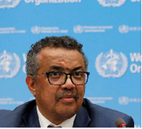

Mundo está no começo de outra onda de infecções e mortes por Covid-19, diz diretor da OMS
O diretor da Organização Mundial da Saúde (OMS), Tedros Adhanom, disse que o mundo está no começo de outra onda de infecções e mortes por Covid-19 (Foto: Reprodução)
Tedros Adhanom Ghebreyesus aponta que países falharam em compartilhar vacinas, testes e medicamentos, o que está alimentando uma "pandemia de duas vias"
Por MIRLA NOBRE
14:56 | 21/07/2021
O diretor-geral da Organização Mundial da Saúde (OMS), Tedros Adhanom Ghebreyesus, disse que o mundo está no começo de outra onda de infecções e mortes por Covid-19. A fala foi realizada durante discurso aos membros do Comitê Olímpico Internacional de Tóquio nesta quarta-feira, 21, (noite de quarta no Brasil). Tedros destacou que, após 19 meses do início da pandemia e sete meses após as primeiras vacinas, o mundo está nos estágios iniciais de outra onda de infecções e mortes pela doença.
Leia mais